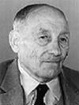

fiche familiale
*******************************************************************************
| |
Emery Rivest/Rivet décède à l'âge de 69 ans. Naissance le 11 juin 1887 à St-Alphonse-de-Rodriguez, cté Joliette Baptisé Wilfrid Emery. Parrain son grand-père Maxime Rivet, marraine Marie-Exaile Thériault. Décès le 24 juin 1956 à Hôpital Hôtel-Dieu de Montréal Funérailles: 28 juin 1956 à St-Isidore de Laverlochère Sépulture au cimetière de Laverlochère. Occupation: Cultivateur. Arrivée au Témiscamingue dans le rang IV de Laverlochère en 1908, il y défricha sa terre et y vécut toute sa vie. Parrain de Léonide Lambert et d'Anita Lambert. Père: Wilfrid Rivet/Rivest Mère: Emma Valois |
Mariage le 25 août 1913 à St-Bruno de Guigues, cté Témiscamingue
| |
Épouse: Marie-Louise Dénommée Dite "Louisée" décède à l'âge de 64 ans. Naissance 11 nov 1884 à St-Didace, cté Maskinongé Parrain Adélard Dénommée, marraine Éliza Jolette. Marraine de Léonide Lambert et d'Anita Lambert. Décès le 12 déc 1948 à Laverlochère, cté Témiscamingue Funérailles: 15 déc 1948 à St-Isidore de Laverlochère. Sépulture: au cimetière de Laverlochère Père: Napoléon Dénommée Mère: Olympe-Alphonsine-Marie Boisvert |
  |
Enfant 1 Noëlla Rivest décède à l'âge de 88 ans. Naissance le 26 déc 1914 à Laverlochère, cté Témiscamingue Décès le 22 juin 2003 à Rouyn-Noranda, cté Témiscamingue (ses ancêtres) Mariage le 26 juin 1935 à St-Isidore de Laverlochère Conjoint: Eugène Barriault décède à l'âge de 84 ans. n. 27 sep 1906 d. 20 oct 1990 Père: Honoré Barriault Mère: Anna Bourget (sa famille) |
| |
Enfant 2 Fernande Rivest décède à l'âge de 91 ans. Naissance le 1 juin 1916 à Laverlochère, cté Témiscamingue Baptême: 2 juin 1916 à St-Isidore de Laverlochère Parrain Cyrénus Beaulé, marraine Maria Dénommée. Décès le 8 juin 2007 à Rouyn-Noranda, cté Témiscamingue Funérailles: 12 juin 2007 à Cathédrale St-Joseph de Rouyn-Noranda Sépulture: au cimetière St-Michel de Rouyn-Noranda Mariage le 5 jul 1938 à St-Isidore de Laverlochère Conjoint: Lucien Lavallée décède à l'âge de 91 ans. n. en 1911 d. 23 mars 2002 Père: Adolphe Lavallée Mère: Amanda Letendre |
Mariage: 10 août 1974 à St-Joseph de Rouyn-Noranda
Conjointe: Carole Bolduc
Chantale Lavallée
Conjoint: Michel Massicotte
Christian Lavallée
Enfant 2 Jacques Lavallée
Mariage: 30 oct 1965 à Ste-Brigitte de Cadillac
Conjointe: Jacqueline Dubé
Marie-Claude Lavallée
Conjoint: Gilles Ferland
Pierre Lavallée
Conjointe: Jacynthe Pilon
Enfant 3 Anicet Lavallée
décède à l'âge de 15 ans.
------------------------------------------------------------------------------
| |
Enfant 3 Juliette Rivest décède à l'âge de 72 ans. Naissance le 13 juin 1917 à Laverlochère, cté Témiscamingue Baptême: 15 juin 1917 à St-Isidore de Laverlochère Parrain Eddy Rivest, marraine Mathilde Fleury. Décès le 25 mars 1990 à Laverlochère, cté Témiscamingue Sépulture: au cimetière de Laverlochère Mariage le 12 avril 1944 à St-Isidore de Laverlochère Conjoint: Rosario Trudel décède à l'âge de 84 ans. n. 17 jan 1911 d. 29 nov 1995 Père: Albert Trudel Mère: Marie-Louise Thibodeau |
Conjoint: Gilles Beaulé
Décède à l'âge de 69 ans.
Harold Beaulé
Manon Beaulé
Conjoint: Michel Villeneuve
Enfant 2 Alain Trudel
Conjointe: Lucie Cyr
Enfant 3 Vianney Trudel
Enfant 4 Richard Trudel
Décède à l'âge de 16 ans.
------------------------------------------------------------------------------
Enfant 4 Marie-Anne-Louise Rivest
décède à l'âge de 4 jours.
Naissance le 26 sep 1918 à Laverlochère,
cté Témiscamingue
Baptême: 26 sep 1918 à St-Isidore de Laverlochère
Parrain Pierre Lambert, marraine Marie-Anne Rivest/Rivet.
Décès le 30 sep 1918 à Laverlochère
Sépulture: au cimetière de Laverlochère
------------------------------------------------------------------------------
Enfant 5 Anonyme Rivest
décède à l'âge de 1 jour.
Naissance le 21 déc 1919 à Laverlochère,
cté Témiscamingue
Décès le 22 déc 1919 à Laverlochère
Sépulture: au cimetière de Laverlochère
------------------------------------------------------------------------------
| |
Enfant 6 Laurette-Anna-Louise Rivest décède à l'âge de 69 ans. Naissance le 19 déc 1920 à Laverlochère, cté Témiscamingue Baptême: 20 déc 1920 à St-Isidore de Laverlochère Parrain Joseph Baril, marraine Herminie Dénommée. Décès en 1990 à Gatineau, cté Hull Mariage le 12 avril 1945 à Belleterre, cté Témiscamingue Conjoint: René Gauthier décède à l'âge de 76 ans. n. en 1908 d. 28 fév 1984 Père: Alfred Gauthier Mère: Ida Cholette |
| |
Enfant 7 Berthe Rivest décède à l'âge de 77 ans. Naissance le 24 avril 1922 à Laverlochère, cté Témiscamingue Baptême: 26 avril 1922 à St-Isidore de Laverlochère Parrain Alfred Trudel, marraine Azélie Bernèche. Décès le 18 juin 1999 à Rouyn-Noranda, cté Témiscamingue Mariage le 29 avril 1945 à Arntfield, cté Témiscamingue Conjoint: Georges Lajoie Père: Alphonse Lajoie Mère: Lydia Gauthier Mariage le 19 mars 1966 à Immaculée-Conception de Rouyn-Noranda Conjoint: Maurice Langlois Père: Joseph Langlois Mère: Laura Bédard |
| |
Enfant 8 Rolande-Emma Rivest Naissance le 28 jan 1924 à Laverlochère, cté Témiscamingue Baptême: 28 jan 1924 à St-Isidore de Laverlochère Parrain Adrien Rivet son oncle, marraine Emma Valois sa grand-mère. Mariage le 27 sep 1947 à Belleterre, cté Témiscamingue Conjoint: Laurier Marion Père: Claude Marion Mère: Jeanne Dempsey |
| |
Enfant 9 Alfred Rivest décède à l'âge de 54 ans. Naissance le 12 oct 1925 à Laverlochère, cté Témiscamingue Baptême: 13 oct 1925 à St-Isidore de Laverlochère Parrain Omer Lambert, marraine Marie-Anne Roy. Décès le 19 oct 1979 à Rouyn-Noranda, cté Témiscamingue Sépulture: au cimetière St-Michel de Rouyn-Noranda Mariage le 27 déc 1952 à St-Isidore de Laverlochère Conjointe: Évelyne Chartrand décède à l'âge de 49 ans. n. en 1929 d. en 1978 Père: Darius Chartrand Mère: Marie-Louise Deault |
Enfant 2 Nicole Rivest
Enfant 3 Louiselle Rivest
Enfant 4 Daniel Rivest
Enfant 5 Sylvie Rivest
------------------------------------------------------------------------------
| |
Enfant 10 Pauline-Emma-Marie Rivest décède à l'âge de 60 ans. Naissance le 17 aoû 1927 à Laverlochère, cté Témiscamingue Baptême: 17 aoû 1927 à St-Isidore de Laverlochère Parrain Zacharie Lepage, marraine Emma Valois ses grands parents. Décès le 19 mai 1988 à Rouyn-Noranda, cté Témiscamingue Funérailles: 21 mai 1988 à Sacré-Coeur-de-Jésus de Rouyn-Noranda Sépulture: au Columbarium, cimetière Notre-Dame, de Rouyn-Noranda Mariage le 24 jul 1954 à Notre-Dame-de-la-Protection de Rouyn-Noranda Conjoint: Laurent Lepage décède à l'âge de 55 ans. n. en 1933 d. 11 déc 1988 Père: Arthur Lepage Mère: Ange-Aimée Baron |
décède à l'âge de 52 ans.
Conjointe: Hélène Plourde
Véronique Plourde-Lepage
Conjoint: Sébastien Ayotte
Enfant 2 Lynn Lepage
Conjoint: Guy Lacroix
Enfant 3 Barry Lepage
Enfant 4 Joël Lepage
Conjointe: Josée Samson
------------------------------------------------------------------------------
Enfant 11 Anicet Rivest
décède à l'âge de 8 ans.
Naissance le 22 nov 1928 à Laverlochère,
cté Témiscamingue
Baptême: 23 nov 1928 à St-Isidore de Laverlochère
Parrain Pierre Lambert, marraine Marie-Anne Rivest/Rivet.
Décès le 9 déc 1936 à Laverlochère
Funérailles: 10 déc 1936 à St-Isidore de Laverlochère
Sépulture: au cimetière de Laverlochère
------------------------------------------------------------------------------